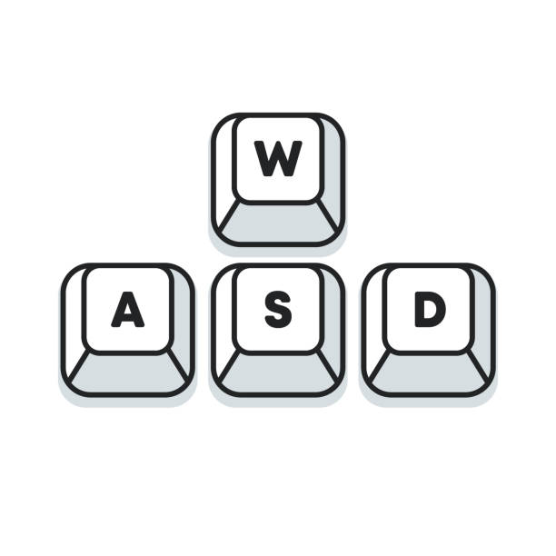

Bem vindo ao RICE ON FIRE!

Nesse jogo o objetivo é comer a maior quantidade de arroz sem acabar pegando fogo!
Você controlará o "Arroizin", um bolinho de arroz que deseja ficar mais forte comendo arroz!
Entretanto, há um sério problema! Há bolas de fogo POR TODOS OS LADOS!
Para controlar o Arroizin você precisará fazer o seguinte:

- W - Para ir para cima!!!
- S - Para ir para baixo!!!
- A - Para ir para esquerda!!!
- D - Para ir para direita!!!
OBJETIVOS:
- Deverá comer o máximo de arroz que conseguir -
cada arroz que comer irá aumentar sua pontuação em 1 ponto!
-
Deverá tomar cuidado para não pegar fogo com as bolas de fogo!!! -
elas estarão passando pelo mapa e você terá que desviar delas!
-
Além disso, deverá tomar cuidado para não bater na borda!
Ela é composta por espinhos! Por tanto tenha cuidado!
-
Você terá 3 vidas ao todo! E conforme avança no jogo,
ele ficará mais difícil!!! O Arroizin começará a engordar!!!